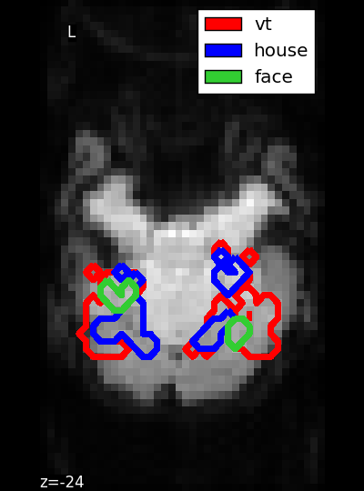

Small script to plot the masks of the Haxby dataset.
Python source code: plot_haxby_masks.py
import numpy as np
import matplotlib.pyplot as plt
import nibabel
from nilearn import datasets
data = datasets.fetch_haxby()
bold_img = nibabel.load(data.func[0])
# Build the mean image because we have no anatomic data
fmri_data = bold_img.get_data().astype(float)
mean_img = fmri_data.mean(axis=-1)
z = 25
fig = plt.figure(figsize=(4, 5.4))
fig.subplots_adjust(bottom=0., top=1., left=0., right=1.)
plt.axis('off')
plt.imshow(mean_img[:, 4:58, z].T, cmap=plt.cm.gray,
interpolation='nearest', origin='lower')
mask_vt = nibabel.load(data.mask_vt[0]).get_data()
plt.contour(mask_vt[:, 4:58, z].astype(np.bool).T, contours=1,
antialiased=False, linewidths=4., levels=[0],
interpolation='nearest', colors=['red'], origin='lower')
mask_house = nibabel.load(data.mask_house[0]).get_data()
plt.contour(mask_house[:, 4:58, z].astype(np.bool).T, contours=1,
antialiased=False, linewidths=4., levels=[0],
interpolation='nearest', colors=['blue'], origin='lower')
mask_face = nibabel.load(data.mask_face[0]).get_data()
plt.contour(mask_face[:, 4:58, z].astype(np.bool).T, contours=1,
antialiased=False, linewidths=4., levels=[0],
interpolation='nearest', colors=['limegreen'], origin='lower')
# We generate a legend using the trick described on
# http://matplotlib.sourceforge.net/users/legend_guide.httpml#using-proxy-artist
from matplotlib.patches import Rectangle
p_v = Rectangle((0, 0), 1, 1, fc="red")
p_h = Rectangle((0, 0), 1, 1, fc="blue")
p_f = Rectangle((0, 0), 1, 1, fc="limegreen")
plt.legend([p_v, p_h, p_f], ["vt", "house", "face"])
plt.show()
Total running time of the example: 11.36 seconds ( 0 minutes 11.36 seconds)